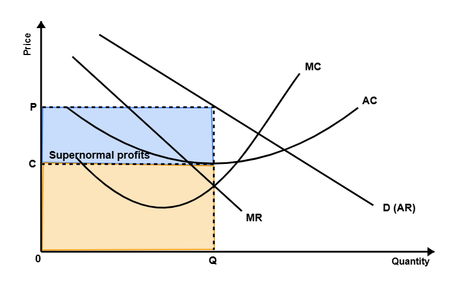

The Diagram
Economist
Start reading
Economic diagrams deliver rapid understanding of complex concepts
Reader
Word 1 of 1
120 words per minute

Revision &
TEST
Micro interactive games
Macro interactive games
Micro past paper
Macro past paper